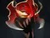
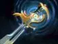
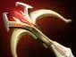

Storm Hammer
Бросает магический молот, оглушая выбранную цель и врагов рядом с ней.

Керри — позиция 1
На линии спокойно добивай крипов и береги здоровье. Используй оглушение, когда союзник готов поддержать атаку. Быстро зачищай группы крипов, а перед дракой активируй способности усиления. В поздней игре помогай команде уничтожать ключевые цели и башни.
Чередуй волны на линиях и лесные лагеря: Great Cleave помогает быстро зачищать группы крипов. Если команда собирается драться и ультимейт готов, оцени, полезнее ли присоединиться к ней, чем продолжать фарм.
Бросает магический молот, оглушая выбранную цель и врагов рядом с ней.
Атаки Свена наносят рассекающий урон врагам рядом с целью.
Усиливает Свена и ближайших союзников, помогая им быстрее передвигаться и выдерживать атаки.
На время значительно увеличивает физический урон Свена.





